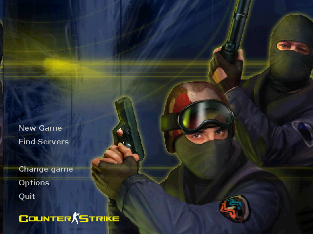
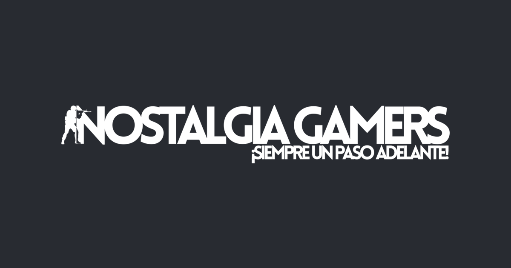
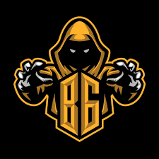

¿Que es el counter strike 1.6?
Counter-Strike es un videojuego de disparos en primera persona multijugador desarrollado por Valve para Microsoft Windows. Es una modificación completa del juego Half-Life, realizada por Minh Le y Jess Cliffe, quienes lanzaron la primera versión el 18 de junio de 1999.
Comunidades
Nostalgia gamers
"Somos una comunidad a la que nos apasiona el gaming. Por eso, ofrecemos una variedad de servidores de juegos con el fin de pasar buenos momentos con gente que tiene los mismos gustos que vos. Con el apoyo de nuestros usuarios, nuestro objetivo es formar una de las mejores comunidades de los últimos tiempos en el mundo del gaming."
Breaking gaming
Somos una comunidad de counter strike, creada en 2019. El objetivo de la misma es mantener la estabilidad de este querido juego.
Servidores
Deathrun IP: CS.NGAMERS.NET:27016
Mix clasico IP: CS.NGAMERS.NET:27021
Automix IP: CS.NGAMERS.NET:27020
Jailbreak IP: CS.NGAMERS.NET:27022
Captura la bandera IP: CS.NGAMERS.NET:27023
Mata al traidor IP: CS.NGAMERS.NET:27019
Kreedz kz IP: CS.NGAMERS.NET:27027
Gun game IP: CS.NGAMERS.NET:27028